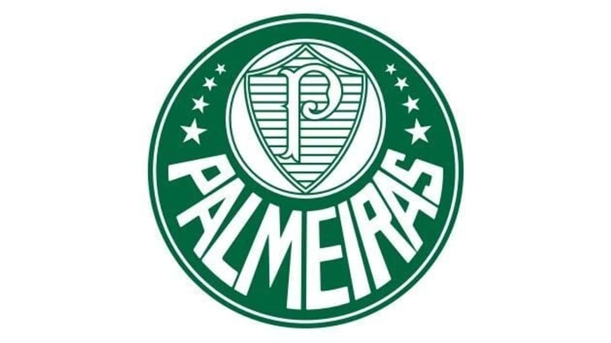
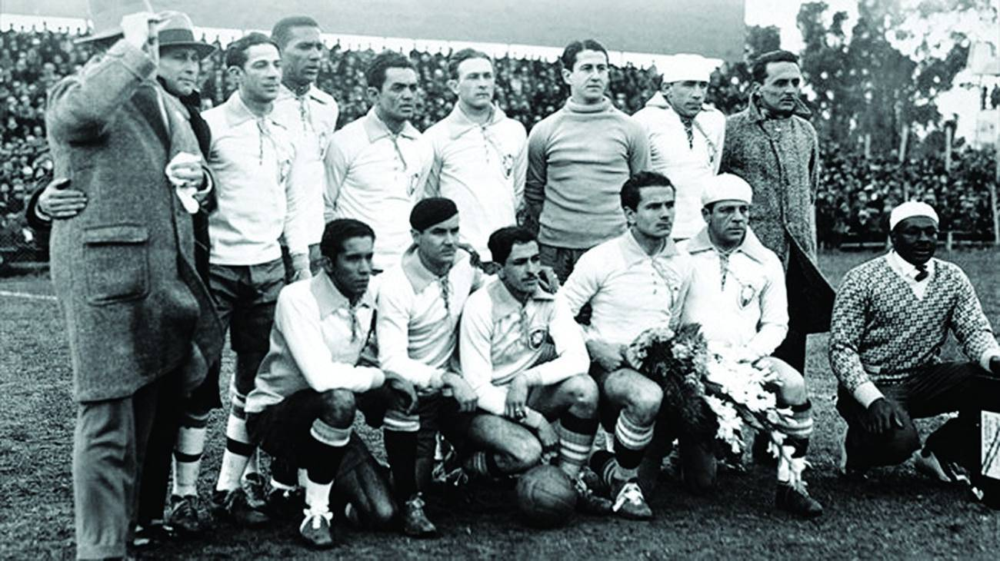

Simbolo do Palmeiras

O Palmeiras foi um clube histórico de futebol, fundado em 1914, um dos maiores do Brasil

Simbolo do Palmeiras
O Palmeiras foi um clube histórico de futebol, fundado em 1914, um dos maiores do Brasil

O Palmeiras tem 12 brasileirão, 3 libertadores, mundial de 51 e Allianz Parque.

VERDADE A primeira edição, em 1951 o palmeiras foi o primeiro mundial conhecido pela fifa).

A camisa da Seleção Brasileira sempre foi a "Amarelinha

MITO A clássica camisa canarinho só nasceu em 1954. Antes disso, o Brasil jogava de branco com detalhes azuis. Após o trauma do Maracanazo (a perda da Copa de 1950 para o Uruguai), o uniforme branco foi considerado "azarado".